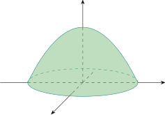

3.2 Iterated Integrals
Suppose that \(f\) is continuous on the rectangle \(R = [a,b]\times [c,d]\). The notation \(\int ^d_c f(x,y)\,dy\) means that \(x\) is held fixed and \(f(x,y)\) is integrated with respect to \(y\) from \(c\) to \(d\), a process called partial integration. The result is a function of \(x\), \[A(x) = \int ^d_c f(x,y)\, dy ,\] which can then be integrated with respect to \(x\) from \(a\) to \(b\): \begin {equation} \int ^b_a\int ^d_c f(x,y)\,dy\,dx = \int ^b_a\left [ \int ^d_c f(x,y)\,dy\right ] dx . \label {eq:iterated} \end {equation} The integral on the right of (5) is an iterated integral: work from the inside out. Similarly, \[\int ^d_c\int ^b_a f(x,y)\,dx\,dy = \int ^d_c\left [ \int ^b_a f(x,y)\,dx\right ] dy ,\] with \(x\) integrated first.
Example 3.2.1. Evaluate the iterated integrals \[(a)\quad \int ^3_0\int ^2_1 x^2y\,dy\,dx\qquad (b)\quad \int ^2_1\int ^3_0 x^2y\,dx\,dy .\]
Solution. \begin {align*} (a)\qquad \int ^3_0\int ^2_1 x^2y\,dy\,dx & = \int ^3_0\left [ \frac {x^2y^2}{2} \right ]_{y=1}^{y=2} dx = \int ^3_0\frac {3}{2}x^2\,dx = \frac {3}{2}\cdot 9 = \frac {27}{2},\\[1ex] (b)\qquad \int ^2_1\int ^3_0 x^2y\,dx\,dy & = \int ^2_1\left [\frac {x^3y}{3} \right ]_{x=0}^{x=3} dy = \int ^2_1 9y\,dy = 9\cdot \frac 32 = \frac {27}{2} . \end {align*}
The two orders give the same answer, which is no accident.
Fubini’s Theorem
Theorem 3.2.2 (Fubini). If \(f\) is continuous on the rectangle \(R = \{ (x,y) \mid a\leq x \leq b,\ c\leq y\leq d\}\), then \[\iint \limits _R f(x,y)\, dA = \int ^b_a \int ^d_c f(x,y)\,dy\, dx = \int ^d_c \int ^b_a f(x,y)\,dx\, dy .\] More generally, the result holds whenever \(f\) is bounded on \(R\), is discontinuous only on finitely many smooth curves, and the iterated integrals exist.
For \(f\geq 0\) the reason is geometric. The integral \(A(x) = \int _c^d f(x,y)\,dy\) is the area of the cross-section of the solid \(S\) by the plane at \(x\), and integrating the areas of cross-sections gives the volume, as in the method of slicing for solids of revolution. Slicing by planes \(y = \text {constant}\) gives the same volume.
Example 3.2.3. Evaluate \(\iint _R (x-3y^2)\,dA\), where \(R = \{ (x,y) \mid 0\leq x \leq 2,\ 1 \leq y \leq 2 \}\).
Solution. By Fubini’s theorem, integrating \(y\) first, \[\iint \limits _R (x-3y^2)\,dA = \int ^2_0\left [xy - y^3\right ]_{y=1}^{y=2}dx = \int ^2_0 (x - 7)\,dx = 2 - 14 = -12 ,\] and integrating \(x\) first, \[\int ^2_1\left [\frac {x^2}{2} - 3xy^2\right ]_{x=0}^{x=2}dy = \int ^2_1 (2 - 6y^2)\, dy = 2 - 14 = -12 .\] The integral is negative because the integrand is negative on most of \(R\).
Solution.
Integrating in \(x\) first, then \(y\)
\[\iint \limits _R y \sin (xy) \, dA = \int ^{\pi }_0 \Big [-\cos (xy)\Big ]_{x=1}^{x=2} dy = \int ^{\pi }_0 (\cos y - \cos 2y)\, dy = \left [\sin y - \frac {\sin 2y}{2}\right ]_0^{\pi } = 0 .\]
The other order
Integrating \(y\sin (xy)\) with respect to \(y\) needs integration by parts: \[\int ^{\pi }_0 y\sin (xy)\,dy = \left [-\frac {y\cos (xy)}{x}\right ]_0^{\pi } + \frac 1x\int _0^{\pi }\cos (xy)\,dy = -\frac {\pi \cos \pi x}{x} + \frac {\sin \pi x}{x^2},\] and the remaining integral \(\int ^2_1 \left ( -\frac {\pi \cos \pi x}{x} + \frac {\sin \pi x}{x^2}\right ) dx\) is done by noticing that the integrand is the derivative of \(-\frac {\sin \pi x}{x}\). Its value is \(\left [-\frac {\sin \pi x}{x}\right ]_1^2 = 0\). The choice of order can turn an easy integral into a hard one.
Example 3.2.5. Find the volume of the solid \(S\) that is bounded by the elliptic paraboloid \(x^2+ 2y^2 + z = 16\), the planes \(x=2\) and \(y = 2\), and the three coordinate planes.

Solution. The solid lies under the surface \(z = 16 - x^2 -2y^2\) and above the square \(R = [0,2]\times [0,2]\). By Fubini’s theorem, \begin {align*} V & = \iint \limits _R ( 16 - x^2 - 2y^2)\, dA = \int ^2_0\int ^2_0 (16 - x^2 -2y^2 )\,dx\, dy\\ & = \int ^2_0\left ( 32 - \frac {8}{3} - 4y^2\right )dy = \int ^2_0\left ( \frac {88}{3} - 4y^2\right )dy = \frac {176}{3} - \frac {32}{3} = 48 . \end {align*}
When the integrand is a product of a function of \(x\) alone and a function of \(y\) alone, \(f(x,y) = g(x)h(y)\), and \(R = [a,b]\times [c,d]\), the inner integral \(\int _c^d g(x)h(y)\,dy = g(x)\int _c^d h(y)\,dy\), so the double integral factors: \[ \iint \limits _R g(x)h(y)\,dA = \int ^b_a g(x)\,dx\int ^d_c h(y)\,dy .\]
Example 3.2.6. Evaluate \(\iint _R \sin x \cos y \, dA\), where \(R = \left [ 0,\frac {\pi }{2}\right ] \times \left [ 0,\frac {\pi }{2}\right ]\).
Solution. \[\iint \limits _R \sin x \cos y \, dA = \int ^{\pi /2}_0 \sin x \, dx \int ^{\pi /2}_0\cos y \,dy = 1\cdot 1 = 1 .\]
Example 3.2.7. Evaluate \(\int _0^1\int _1^2 \frac {x}{1 + xy}\,dy\,dx\) and \(\int _0^1\int _0^1 xe^{xy}\,dy\,dx\).
Solution. For the first, the inner integral is \(\left [\ln (1 + xy)\right ]_{y=1}^{y=2} = \ln (1 + 2x) - \ln (1 + x)\), and \[\int _0^1\big (\ln (1+2x) - \ln (1+x)\big )\,dx = \left [\tfrac {(1+2x)\ln (1+2x)}{2} - (1+x)\ln (1+x)\right ]_0^1 = \tfrac 32\ln 3 - 2\ln 2\approx 0.2616 ,\] the terms \(-x\) from the two antiderivatives cancelling. For the second, the inner integral is \(\left [e^{xy}\right ]_{y=0}^{y=1} = e^x - 1\), so the value is \(\int _0^1 (e^x - 1)\,dx = e - 2\). Here integrating \(y\) first is essential: in the other order the inner integral \(\int _0^1 xe^{xy}\,dx\) needs integration by parts and the outer one is harder still.
Questions on this section
Stuck on something here? Ask below and it stays attached to this topic.